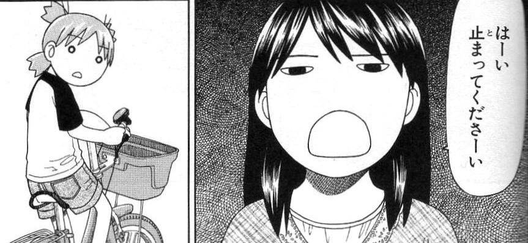

4.The Imperative Form
- You might have learned a couple of different ways to make a command or request in Japanese. The most polite of these is ～てください, as in 飲んでください. You might have also learned that you can say 飲んで or 飲みなさい.

- However, there is also 命令形 - literally command form. It is usually only used by men and presents a very harsh command. Please see the next slide for a table!
- Example: 早くしろ！(Do it quickly!)
@kallisto-no-planetarium